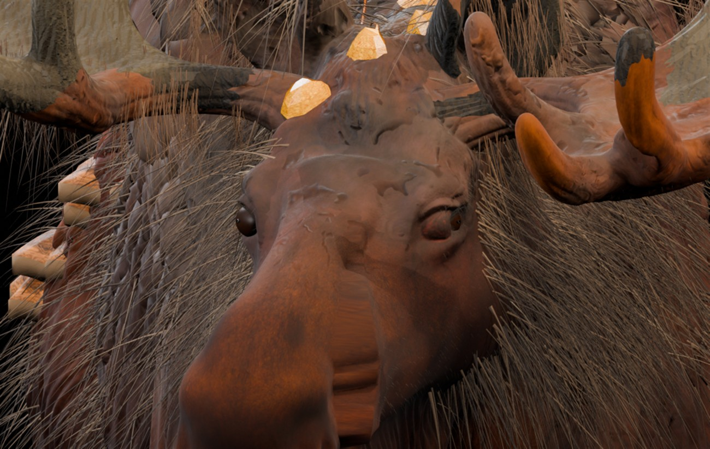

Лесной лось: V30V
Контрольные изображения из настоящей редактируемой 3D-модели Blender, не концепт. После V30T доработаны ресницы и короткая шерсть на морде: длинные жёсткие иглы, появившиеся в пробной V30U, убраны. Сохранены реальные отверстия глазниц в меше головы, объёмные глаза, мохнатый горб и кристаллические наросты.

1 / 4 · Голова — фронтальный вид
Нажми на изображение для полного размера · Клавиши ← / →
Анатомия глазВырезаны реальные глазницы, веки соединены с мешем головы
Новая шерстьГорб, шея, плечи и более короткие ресницы на морде
СохраненоРедактируемая Blender-модель + игровой GLB с PBR-материалами